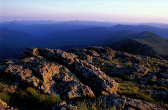
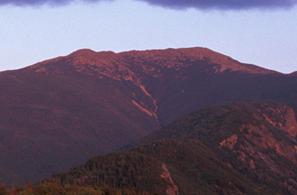
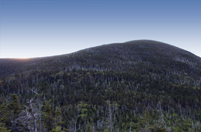
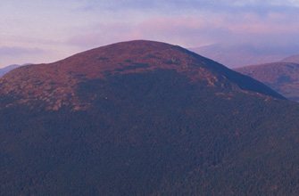
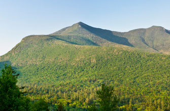
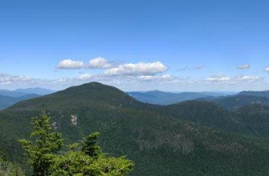

MOUNTAIN CLIMBING DIRECTORY
Mt. Washington
Elevation: 6288 Climb Type: Strenuous
Mt. Washington (6,288 feet) is the highest peak east of the Mississippi River and north of the Carolinas. The upper part of the mountain has a climate similar to that of northern Labrador and supports a variety of alpine flora and fauna.
Coordinates: lat 44.320686 lng -71.291742
Mt. Adams
Elevation: 5799 Climb Type: Strenuous
Mt. Adams (5,799') is the second highest peak in New England, offering spectacular views across the Great Gulf and King Ravine.
Coordinates: lat 44.304196 lng -71.316848
Mt. Jefferson
Elevation: 5716 Climb Type: Strenuous
Mt. Jefferson (5,716 feet) has three summits a short distance apart, in line northwest and southeast, with the highest in the middle. Perhaps the most striking view is down the Great Gulf with the Carter Range beyond.
Coordinates: lat 44.255036 lng -71.321483
Mt. Monroe
Elevation: 5372 Climb Type: Strenuous Mt. Monroe (5,372 feet) is the highest of the Southern Presidentials, and is a sharply pointed peak rising abruptly from the area around the Lakes of the Clouds. The summit is completely above treeline and affords fine views of the deep chasm of Oakes Gulf.
Coordinates: lat 44.328422 lng -71.277795
Mt. Madison
Elevation: 5366 Climb Type: Strenuous
Mt. Madison (5,366 feet) is the farthest northeast of the high peaks of the Presidential Range, remarkable for the great drop of more than 4,000 feet to the river valleys east and northeast from the summit.
Coordinates: lat 44.16078 lng -71.644464
Mt. Lafayette
Elevation: 5260 Climb Type: Strenuous Mt. Lafayette (5,260 feet) represents the highest peak in the Franconia Ridge and, from the summit, offers a stunning view of the Pemigewasset Wilderness Area.
Coordinates: lat 44.148587 lng -71.644678
Mt. Lincoln
Elevation: 5089 Climb Type: Strenuous
Mt. Lincoln (5,089 feet), a part of the popular and scenic Franconia Ridge, bears a sharp, rugged peak with excellent views of the surrounding area and an array of alpine plants.
Coordinates: lat 44.148587 lng -71.644678
South Twin
Elevation: 4902 Climb Type: Strenuous South Twin Mountain (4,902 feet) offers sweeping views to the south of the Franconia Ridge and Franconia Brook valleys.
Coordinates: lat 44.18762 lng -71.554685
Carter Dome
Elevation: 4832 Climb Type: Strenuous
Carter Dome (4,832'), in the Carter-Moriah Range, offers dramatic, close-up views of Mount Washington and the Presidential Range from its northeastern shoulder,
Mt. Moosilauke
Elevation: 4802 Climb Type: Moderate
Mount Moosilauke, at 4,802 feet, is the western-most 4,000-footer in NH. The alpine summit, on a clear day, affords hikers stunning views, to the east, of the Franconia Ridge and Presidentials, and to the west, the Green Mountains of Vermont and, in the distance, the Adirondacks in New York State.
Coordinates: lat 44.024422 lng -71.830974
Mt. Eisenhower
Climb Type: Elevation: 4760 Moderate Mount Eisenhower (4,760 ft.), part of the southern Presidential Range, has a bald summit that offers 360-degree views of the surrounding area.
Coordinates: lat 44.240526 lng -71.350193
North Twin
Elevation: 4761 Climb Type: Strenuous
North Twin Mountain (4,761 feet), adjacent to the taller South Twin Mountain, offers a challenging climb to superb outlook ledges near its summit.
Coordinates: lat 44.202482 lng -71.557646
Mt. Carrigain
Elevation: 4700 Climb Type: Strenuous
Mount Carrigain, at 4,700 feet, is one of the highest peaks along the southeastern ridge bordering the Pemigewasset Wilderness Area. An observation tower on Carrigain's summit provides hikers with a stunning view of the surrounding White Mountains.
Coordinates: lat 44.093411 lng -71.446924
Mt. Bond
Elevation: 4698 Climb Type: Strenuous
Mount Bond (4,698 ft.), the highest peak in the southern Twin range, represents, with neighboring Mt. Guyot, one of the two most remote peaks in the White Mountains. From Bond's summit, there is virtually no sign of human impact in the form of roads or buildings.
Coordinates: lat 44.152806 lng -71.530995
Middle Carter
Elevation: 4610 Climb Type: Moderate to Strenuous
A part of the Carter-Moriah Range, Middle Carter Mountain (4,610'), though wooded, rewards hikers 70 yards north of its summit with a view of the Presidential Range.
Coordinates: lat 44.303059 lng -71.16776
West Bond
Elevation: 4540 Climb Type: Strenuous
West Bond (4,540 ft.), a spur of Mount Bond in the southern Twin range, offers extensive views of the White Mountains with virtually no sign of human interference in the form of buildings or roads from the summit.
Coordinates: lat 44.154438 lng -71.544085
Mt. Garfield
Elevation: 4500 Climb Type: Moderate to Strenuous
A trip to Mt. Garfield's rocky summit (4,500 ft.) rewards hikers with a panoramic view of the surrounding Franconia Ridge and Franconia and Lincoln Brooks valleys.
Coordinates: lat 44.187374 lng -71.611204
Mt. Liberty
Elevation: 4459 Climb Type: Strenuous
Amidst the scenic Franconia Ridge, Mt. Liberty (4,459 feet) bears a sharp, ledgy peak with excellent views of the surrounding area, including nearby Mount Bond and the Pemigewasset Wilderness.
Coordinates: lat 44.115907 lng -71.641974
South Carter
Elevation: 4430 Climb Type: Moderate to Strenuous
In the midst of the Carter-Moriah Range, South Carter Mountain (4,430'), fails to provide any views from its wooded peak, but offers hikers the opportunity to explore the beauty of a typical high-elevation White Mountain boreal forest.
Coordinates: lat 44.289729 lng -71.176472
Wildcat Mountain
Elevation: 4422 Climb Type: Strenuous
Wildcat Mountain (4,422'), located in the Carter-Moriah Range, offers dramatic, close-up views of Carter Notch and Carter Dome from its summit. Wildcat's D Peak (4,062'), home to Wildcat Ski Area, is considered an independent 4,000-footer and offers excellent views of Mt. Washington and the Presidential Range from an observation tower.
Coordinates: lat 44.25897 lng -71.201663
Mt. Hancock
Elevation: 4420 Climb Type: Strenuous
Located at the southern border of the Pemigewasset Wilderness, Mt. Hancock is characterized by a long ridge with several peaks, most importantly the North Peak (4,420') and the South Peak (4,319'), also known as South Hancock. Although both peaks are wooded to the top, lookout ledges near the North Peak offer views of Mt. Osceola and the Sandwich Range to the south.
Coordinates: lat 44.083331 lng -71.493273
South Kinsman
Elevation: 4358 Climb Type: Strenuous
South Kinsman (4358') is the highest point on the Kinsman-Cannon Ridge.
Coordinates: lat 44.122869 lng -71.736774
Mt. Field
Elevation: 4340 Climb Type: Moderate
Mt. Field (4,340') is the highest peak within the Willey Range, which rises from the western boundary of Crawford Notch State Park.
Coordinates: lat 44.196174 lng -71.43332
Mt. Osceola
Elevation: 4340 Climb Type: Moderate Mt. Osceola (4,340') is the highest peak in the Waterville Valley Region and offers great views of the Pemigewasset Wilderness to the north. East Osceola (4,156') is the subordinate peak to Mt. Osceola. Immediately to the south of Mt. Osceola is Mt. Tecumseh (4,003'), the shortest official 4,000 footer. East, across the valley, is the Tripyramid Massif, which includes North Tripyramid (4,180') and Middle Tripyramid (4,140').
Coordinates: lat 44.001459 lng -71.535802
Mt. Flume
Elevation: 4328 Climb Type: Strenuous
Mt. Flume (4,328'), a part of the popular and scenic Franconia Ridge, bears a sharp, rugged peak with excellent views of the surrounding area and an array of alpine plants.
South Hancock
Elevation: 4319 Climb Type: Strenuous
Located at the southern border of the Pemigewasset Wilderness, Mt. Hancock is characterized by a long ridge with several peaks, most importantly the North Peak (4,420') and the South Peak (4,319'), also known as South Hancock. Although both peaks are wooded to the top, lookout ledges near the North Peak offer views of Mt. Osceola and the Sandwich Range to the south.
Coordinates: lat 44.073311 lng -71.487093
Mt. Pierce
Elevation: 4312 Climb Type: ModerateMount Pierce (4,312 ft.), part of the southern Presidential Range, has a flat summit with a broad, open area on the east side that offers striking views of the surrounding area.
Coordinates: lat 44.226535 lng -71.365771
North Kinsman
Elevation: 4293 Climb Type: Strenuous
North Kinsman (4,293') is the second highest peak on the Kinsman-Cannon Ridge. Ledges just below the wooded summit offer great views of Mt. Lafayette and Mt. Lincoln across Franconia Notch.
Coordinates: lat 44.133404 lng -71.736946
Mt. Willey
Elevation: 4285 Climb Type: Strenuous
Mt. Willey (4,285') is the second highest and southernmost mountain of the Willey Range, which also includes Mt. Field (4,340') and Mt. Tom (4,051').
Coordinates: lat 44.183866 lng -71.42096
Bondcliff
Elevation: 4265 Climb Type: Strenuous
Bondcliff (4,265 ft.), along with neighboring Mt. Guyot and Mt. Bond, offers some of the most stunning views in the Whites, with virtually no sign of roads or buildings visible from the summit.
Coordinates: lat 44.139841 lng -71.542068
Zealand Mountain
Elevation: 4260 Climb Type: Strenuous
The summit of Zealand Mountain (4,260 feet) is wooded and viewless, but the trip is nonetheless worthwhile when hikers include a stop at the nearby Zeacliff outlook along the way.
Coordinates: lat 44.179311 lng -71.521254
North Tripyramid
Elevation: 4180 Climb Type: Strenuous
The Tripyramid massif includes three peaks: North Tripyramid (4,180'), Middle Tripyramid (4,140'), and South Tripyramid (4,100'). The latter peak is not considered an official 4,000 footer because there is not a sufficient change in altitude between its neighboring peak.
Coordinates: lat 43.973144 lng -71.44289
Mt. Cabot
Elevation: 4170 Climb Type: Moderate to Strenuous
Mount Cabot (4,170 ft.) is the highest peak in New Hampshire's North Country, offering interesting views from the site of a former fire tower, just southeast of the summit.
Coordinates: lat 44.505963 lng -71.414394
East Osceola
Elevation: 4156 Climb Type: Strenuous
Mt. Osceola (4,340') is the highest peak in the Waterville Valley Region and offers great views of the Pemigewasset Wilderness to the north. East Osceola (4,156') is the subordinate peak to Mt. Osceola. Immediately to the south of Mt. Osceola is Mt. Tecumseh (4,003'), the shortest official 4,000 footer. East, across the valley, is the Tripyramid Massif, which includes North Tripyramid (4,180') and Middle Tripyramid (4,140').
Coordinates: lat 44.006089 lng -71.520481
Middle Tripyramid
Elevation: 4140 Climb Type: Strenuous
The Tripyramid massif includes three peaks: North Tripyramid (4,180'), Middle Tripyramid (4,140'), and South Tripyramid (4,100'). The latter peak is not considered an official 4,000 footer because there is not a sufficient change in altitude between its neighboring peak.
Coordinates: lat 43.964619 lng -71.440187
Cannon Mountain
Elevation: 4100 Climb Type: Moderate
Cannon Mountain (4,100') is also known as Profile Mountain, referring to the magnificent profile of the Old Man of the Mountain, an infamous formation of three ledges on the east cliff that collapsed in May 2003.
Coordinates: lat 44.156993 lng -71.698794
Wildcat D
Elevation: 4062 Climb Type: Strenuous
Wildcat Mountain (4,422'), located in the Carter-Moriah Range, offers dramatic, close-up views of Carter Notch and Carter Dome from its summit. Wildcat's D Peak (4,062'), home to Wildcat Ski Area, is considered an independent 4,000-footer and offers excellent views of Mt. Washington and the Presidential Range from an observation tower.
Coordinates: lat 44.249472 lng -71.22385
Mt. Hale
Elevation: 4054 Climb Type: Moderate
Mount Hale (4,054'), one of the Little River Mountains, offers hikers an easy hike.
Coordinates: lat 44.221707 lng -71.512113
Mt. Jackson
Elevation: 4052 Climb Type: Moderate
Mount Jackson (4,052 ft.), part of the southern Presidential Range, has a square, ledgy summit that offers stunning views of the surrounding Presidentials.
Coordinates: lat 44.203097 lng -71.375299
Mt. Tom
Elevation: 4051 Climb Type: Moderate
Mt. Tom (4,051') is the northernmost peak of the Willey Range, which rises from the western boundary of Crawford Notch State Park.
Coordinates: lat 44.210357 lng -71.445894
Owl's Head
Elevation: 4025 Climb Type: Strenuous
Owl's Head Mountain (4,025 feet), occupies a narrow valley created by the Twin-Bond Range to the east and the Franconia Range to the west. More than ten 4,000s surround Owl's Head. Needless to say, it is one of the more remote major summits in the White Mountains.
Coordinates: lat 44.144368 lng -71.604853
Mt. Waumbek
Elevation: 4006 Climb Type: Strenuous Mt. Waumbek (4,006 ft.), is the highest peak in the Pliny Range of New Hampshire's North Country, offering views to the east just beyond the summit, along the Kilkenny Ridge Trail.
Coordinates: lat 44.432677 lng -71.417484
Mt. Isolation
Elevation: 4003 Climb Type: Strenuous
Mount Isolation (4,003 ft.) is the highest peak of the Montalban Ridge, a subsidiary of the Presidentials, and offers stunning views of the Presidentials - one of the finest views in the White Mountains.
Coordinates: lat 44.214756 lng -71.309466
Mt. Tecumseh
Elevation: 4003 Climb Type: Moderate
Mt. Tecumseh (4,003') is the shortest official 4,000 footer and home to Waterville Valley ski area. Views to the immediate north include Mt. Osceola (4,340'), the highest peak in the region. East, across the valley, is the Tripyramid Massif, which includes North Tripyramid (4,180') and Middle Tripyramid (4,140').
Coordinates: lat 43.966565 lng -71.556745